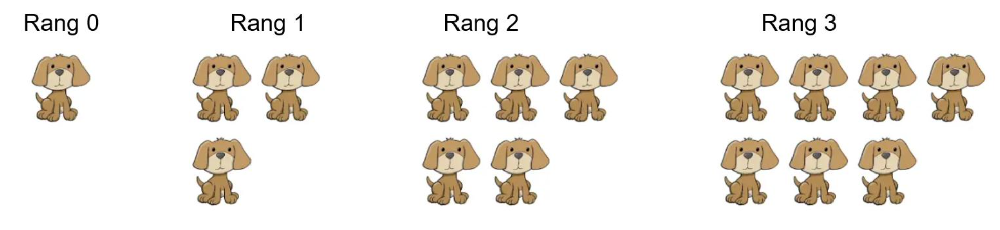
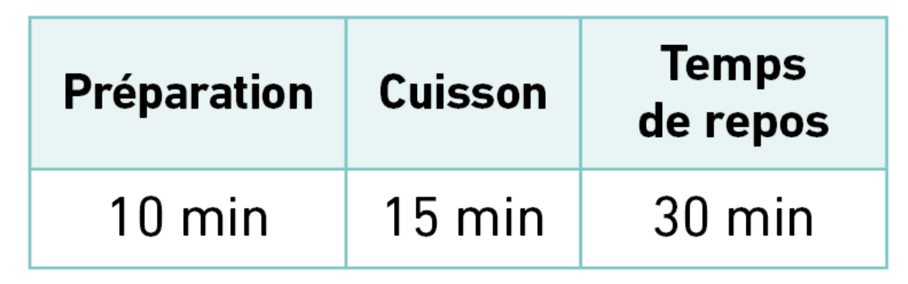
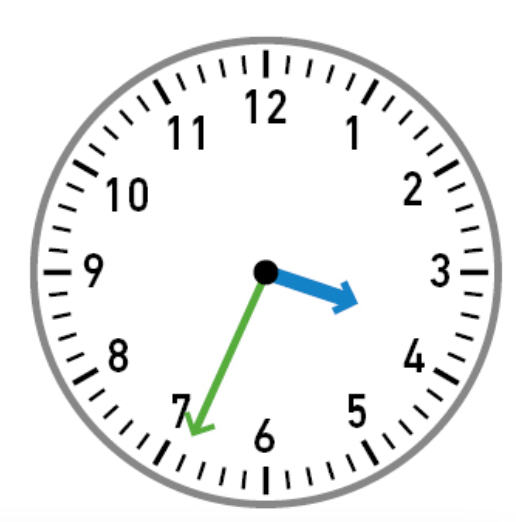

Compléter : ……..... x 100 = 909,3 |
Voici un pattern de figures : ●  Combien faut-il de chiens au rang suivant ? ……...● Combien faut-il de chiens au 10e rang ? ………………………………………………………….. ● Peut-on avoir 246 chiens à un certain rang ? ………………………………………………………….. |
Aurélien
invite ses amis pour le goûter. Il veut prépa   Voici l’affichage de sa montre quand il commence à cuisiner. À quelle heure les pancakes seront-ils prêts ? |